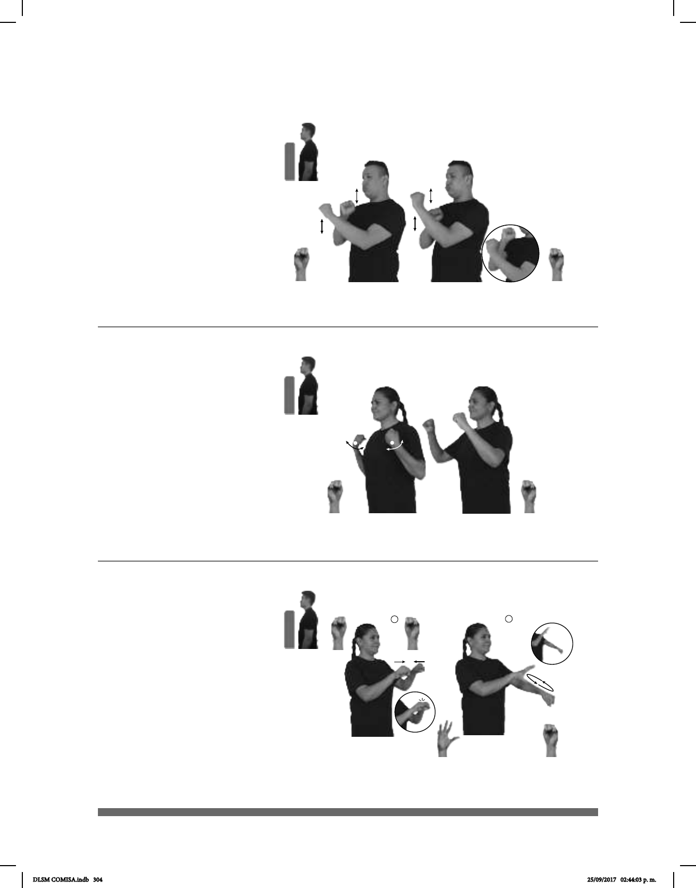

304
1
2
(S-33)
Seña: SC: I. SS; II. SB
I. S.1; II. MD 5.2, MB
S.1
I. Palmas hacia abajo; II.
MD palma hacia fuera. MB palma hacia
abajo.
I. A la altura del pecho; II.
MD sobre el brazo de MB. MB la altura
del abdomen.
I. Las manos se encuentran
y se tocan; II. MD recto hacia adelante
repetidamente.
v. tr. Unir un cable de un
aparato eléctrico con un contacto o una
fuente determinada.
HORNO-DE-MICROONDAS CONECTAR PARA COMIDA CALENTAR
Conecta el horno de microondas para calentar la comida.
Seña: SS
S.1
Las palmas inician hacia
dentro y terminan oblicuas hacia el centro
y hacia fuera.
A la altura de los hombros.
Las muñecas giran y
cambian la orientación de las manos,
pasan de mostrar el dorso a mostrar las
palmas.
Simula la acción de
columpiarse.
ambos extremos a un punto elevado cuyo
centro sirve para sentarse una persona y
mecerse.
(S-32)
COLUMPIO
área
NIÑO
plural estatura
MULTITUD GUSTAR
A todos los niños les gustan mucho los columpios.
Seña: SB
MD y MB S.1
MD palma hacia la
izquierda, MB palma hacia la derecha.
A la altura del pecho. MD y
MB cruzadas.
MD y MB recto de arriba
hacia abajo alternadamente.
Labios protruidos.
sust. m. Parte del motor de
combustión interna, que tiene esta
forma, en donde se encuentra el pistón y
se efectúa la combustión de la gasolina.
(S-31)
CUATRO CILINDRO pos-MI CARRO USAR
Mi carro usa cuatro cilindros.
DLSM COMISA.indb 304 25/09/2017 02:44:03 p. m.